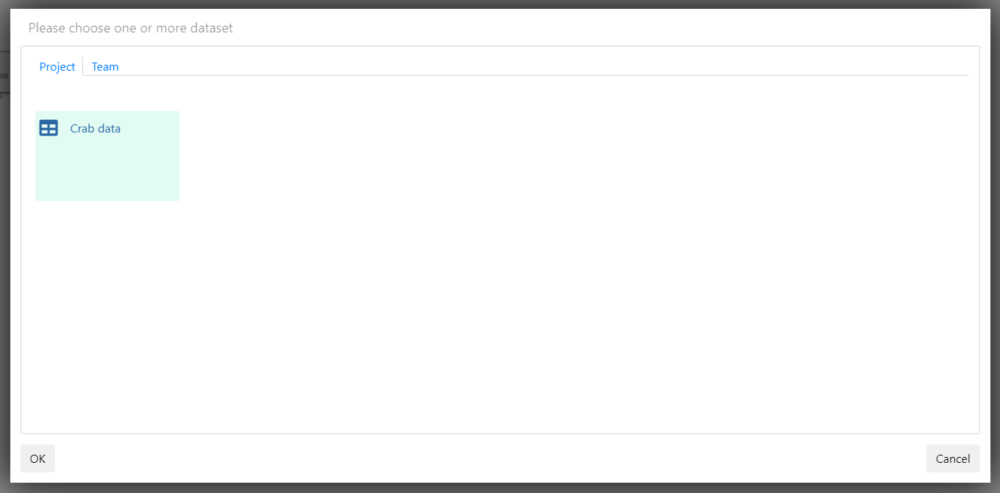

Chapter 12 Create a workflow
In this section we create a workflow in your project area.
Go to the project homepage
Click on
New workflow
Provide a descriptive name for your new workflow, we will go with “My new workflow”

Click
OK
You now have an empty workflow titled “My new workflow”.
- Right click in the middle of the empty page and select
Add

- Click on
Table

Select the data you want to analyse

Click on
OK

- If the step’s name is not correct or descriptive: Select the box, right click and select
Rename
You have now successfully imported the crabs data set into the projects workflow. In the next section we view the data using projections.